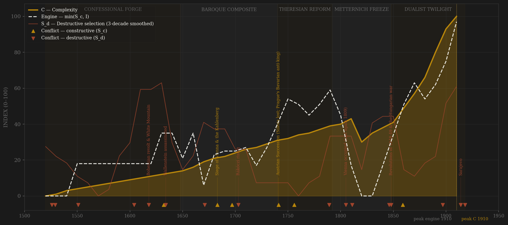
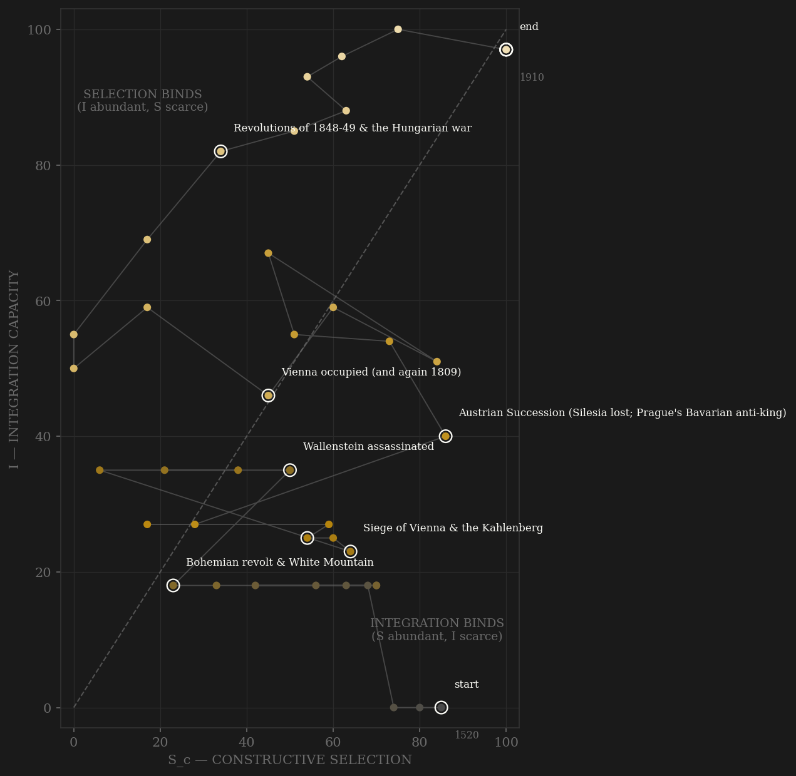

Habsburg Austria is the control case for the German-power pair: same century, same neighbourhood, the opposite integration technology. The arc opens at Mohács — a dynastic jackpot inherited as three crowns with three laws, three diets, and no common anything. The court ladder that assembles is wide but shallow: Czech, Hungarian, Italian, Spanish, Irish and Walloon families rise through Vienna's service (Eugene of Savoy, Louis XIV's reject, becomes the house's greatest soldier) — but entry is to court favour, never to a unified elite, and the apex never opens. The seventeenth century contains the polity's defining act of self-harm: the Bohemian revolt is answered at White Mountain with the amputation of an entire confessional elite — twenty-seven heads on the Old Town Square, three-quarters of the kingdom's noble land confiscated, the Protestant nobility expelled — the Huguenot expulsion a half-century early, and self-inflicted at the polity's industrial core. The reconquest of Hungary and Eugene's Zenta-to-Belgrade decade push channel B to its ceiling, but Rákóczi's eight-year rising shows what the reconquest had not done: incorporate anyone. The reform arc is real — Theresian academies and Haugwitz's salaried service after the near-death of 1741, then the Josephinian decade, the sample's cleanest demonstration that channel A and channel C are different things: Joseph opens careers by toleration decree while ruling every diet by fiat — the ladder at maximum, the contest at zero, and the backlash (Brabant in revolt, Hungary shipping its crown home) arrives within the decade. The nineteenth century is the pathology named: a merit bureaucracy gated by Germanization, so every rung a Czech or Magyar climbed was priced at assimilation; 1848-49 is the machinery at war with itself, ended by Russian bayonets and the Arad gallows; 1867 is a negotiated partial reopening — for Magyars only, integration formally CAPPED in a compromise renegotiated every ten years, brinkmanship as constitutional routine. And then the annuity: measured complexity — GDP, urbanization, the Vienna 1900 supernova of Freud, Klimt, Mahler and Boltzmann — compounds fastest precisely after the Badeni riots jam the Reichsrat permanently in 1897. Universal suffrage in 1907 elects a parliament that cannot govern. Sarajevo is coded by locus: the heir assassinated by the dynasty's own subject-nationalists, and the empire dissolves in October 1918 province by province, before the armistice, from within.

The phase portrait is the inverse of Prussia's and the pair should be read together: Austria enters HIGH on the selection axis — the cosmopolitan founding court, the Ottoman contest — and near ZERO on integration, and spends four centuries pinned in the integration-binds region, raw selection exceeding integration in 38 of 40 decades. That is not an artifact; it is the composite monarchy measured: pressure the coordination machinery could never match, because the machinery was kept partial on purpose — three crowns, internal customs to 1775 and 1851, no common language, and after 1867 a statutory cap. The trajectory grinds slowly rightward as the integration reforms land (Haugwitz 1749, the customs unifications, rail, the 1851 market union under bayonets) without ever crossing the diagonal for good. Where Prussia's path saws up the selection axis with each reform-reaction cycle, Austria's crawls along the integration axis beneath a selection ceiling it never spends. The series ends in the top-right corner like Britain's and Prussia's — but it arrives there two generations late, with the political machinery already jammed, and the corner is cut off not by an external cliff alone but by dissolution from inside.
Coded by locus and target, never by outcome. Austria works the locus rule harder than any polity in the sample because its wars keep changing character mid-stream. The Ottoman contest is channel B for two and a half centuries — but the two sieges of Vienna (1529, 1683) are S_d edge spikes: the core besieged, the court evacuated; the WARS stay B because the relief was organized by the machinery itself (Kahlenberg 1683 is the Hannibal rule at maximum amplitude — the state under siege coordinating its own rescue). The Thirty Years War is split by locus, not lumped: the Bohemian revolt of 1618-20 is internal — a kingdom's estates rising against their crowned king — while the Swedish and French phases are peer war on Imperial soil. The French wars are B; the two occupations of Vienna (1805, 1809) are S_d by the Deluge rule. The Hungarian pattern is the empire in miniature: the Diet's permanent constitutional contest is channel C when bloodless (Pressburg 1741, the reform diets, the 1867 negotiation itself) and S_d when it goes to arms (Bocskai, Thököly, Rákóczi, 1848-49 — the last a full internal war requiring 200,000 Russians and closed with the Arad executions). White Mountain and its aftermath is the confessional-elite amputation — the state destroying its own coordination capacity at the core, the self-inflicted analogue of the Huguenot expulsion. Wallenstein's assassination by imperial warrant is the Yue Fei precedent at full scale. And Sarajevo 1914 is the ledger's sharpest locus call: an Ottoman-successor pistol in a Bosnian street, but the assassins were the dynasty's own subjects and the target was the succession itself — S_d, the fuse of a terminal internal dissolution that the external war merely accelerated.
| YEAR | CONFLICT | CODE | CODING RATIONALE |
|---|---|---|---|
| 1526 | Mohács & the Zápolya civil war | Sd | The accession war: a rival king crowned inside the composite — the contest for the Hungarian crown is internal by locus (the Ottoman wars around it are B) |
| 1529 | First siege of Vienna | Sd | Core besieged — S_d edge spike by locus; the Ottoman WAR stays B (the defence held, machinery functioning) |
| 1551 | Fráter György assassinated | Sd | The crown murdering its own Transylvanian chancellor-cardinal on suspicion — Yue Fei precedent, bloodless-era variant |
| 1604 | Bocskai rising | Sd | Hungarian internal war against confessional coercion; ends in the 1606 settlement the estates then defend for a century |
| 1618 | Bohemian revolt & White Mountain | Sd | A kingdom's estates against their crowned king; answered 1620-21 with the confessional-elite AMPUTATION — 27 executed, ~3/4 of noble land confiscated, Protestant nobility expelled: self-inflicted, the Huguenot-expulsion analogue |
| 1632 | Swedish war (Lützen, Nördlingen) | Sc | The 30YW's external phases are peer war at maximum on Imperial soil — split by locus from the internal 1618-20 revolt |
| 1634 | Wallenstein assassinated | Sd | The generalissimo killed at Eger by imperial warrant — the state destroying its own command: the Yue Fei precedent at full scale |
| 1671 | Magnate conspiracy executions | Sd | Zrínyi, Frangepán, Nádasdy beheaded; Hungarian constitution suspended 1673; preachers to the galleys — the crown at war with its own elite |
| 1683 | Siege of Vienna & the Kahlenberg | Sc | The siege is an S_d edge spike (core besieged, court evacuated) but the WAR is B at its apex: the relief was organized by the machinery itself — the Hannibal rule at maximum amplitude; then the reconquest (Buda 1686) |
| 1697 | Zenta & the reconquest of Hungary | Sc | Eugene annihilates the Ottoman field army; Karlowitz 1699 recovers Hungary after 160 years — pure channel B |
| 1703 | Rákóczi rising | Sd | Most of Hungary under arms for eight years against the reconquest settlement — the composite's incorporation failure in arms; ends at Szatmár 1711 in negotiated amnesty |
| 1741 | Austrian Succession (Silesia lost; Prague's Bavarian anti-king) | Sc | The survival contest vs Frederick's Prussia = B; the 1741-42 Prague occupation with a rival crowned KING OF BOHEMIA is an internal-allegiance edge spike coded in S_d; the 1741 'vitam et sanguinem' Diet is channel C working under existential stress |
| 1756 | Seven Years War | Sc | Kolín, Hochkirch, Kunersdorf with Russia — the Prussian peer contest at maximum; Silesia not recovered at Hubertusburg |
| 1789 | Brabant revolution & Hungarian backlash | Sd | Integration-by-fiat manufactures its own destructive selection: a core province in revolt, the Crown of St Stephen shipped home 1790 — the Josephinian reopening's price (Aurangzeb precedent: policy as S_d) |
| 1805 | Vienna occupied (and again 1809) | Sd | Austerlitz and Wagram lose the wars; the capital taken TWICE = S_d by the Deluge locus rule despite external origin — the wars themselves stay B |
| 1811 | State bankruptcy | Sd | Not a conflict but the fiscal rupture of the ledger: the Gulden devalued to one-fifth — carried in E; listed here because the Bankozettel collapse broke more households than most wars (rationale row, no arc annotation) |
| 1846 | Galician slaughter | Sd | Peasants massacre the Polish nobility of a whole province, the state complicit — internal violence at the periphery's core |
| 1848 | Revolutions of 1848-49 & the Hungarian war | Sd | Vienna bombarded by its own army, Prague bombarded, and a full internal war in Hungary ended by 200,000 Russians and the 13 of Arad — the machinery at war with itself: the S_d co-maximum with 1618-21 |
| 1859 | Solferino (and Königgrätz 1866) | Sc | Lombardy lost to France-Piedmont, then the German question settled AGAINST Austria in seven weeks — external peer defeats whose internal RUPTURES were bargained, not fought (the 1867 compromise is the C-channel answer) |
| 1897 | Badeni riots & Reichsrat paralysis | Sd | Street violence over the language of office; parliament physically disrupted and permanently obstructed after — machinery seizure, largely bloodless (Song blacklist family) |
| 1914 | Sarajevo | Sd | The heir assassinated by internal-subject nationalists — S_d BY LOCUS: the target was the dynasty's coordination machinery, the assassins its own citizens; the external war it detonates is coded B |
| 1918 | Dissolution | Sd | TERMINAL: national councils take the provinces one by one in October-November 1918, before the armistice — the empire ends from within |
| COMPONENT | GRADE | BASIS |
|---|---|---|
| S_c A — Elite-entry (0.40) | ○ scholar-coded | The cosmopolitan-court ladder coded 0-10 from Evans (Making of the Habsburg Monarchy, pts.I-III), Ingrao (Habsburg Monarchy 1618-1815, chs.2-6), Judson (The Habsburg Empire, chs.1-7): wide-but-shallow entry across nationalities (Eugene the emblem), post-White Mountain re-founding on confiscated land, Theresian academies 1746/1751, JOSEPHINIAN REOPENING 1780s (toleration, serf emancipation, exams) partially reversed, neoabsolutist merit ladder GATED BY GERMANIZATION (the channel-A pathology: entry priced at assimilation), 1867 = negotiated partial reopening for Magyars only, the apex (ministries, diplomacy, general staff) aristocratic to the end |
| S_c B — External rivalry (0.30 cap) | ◐ war-years chronology | War-years/decade + race ordinal: Ottoman wars 1526-1791, 30YW external phases, Prussian wars 1740s/1756-63/1866, French wars 1792-1815, 1859, 1914-18. LOCUS-CLEANED: Bohemian revolt = S_d; Vienna sieges 1529/1683 = S_d spikes inside B wars (Hannibal rule); Vienna occupations 1805/1809 = S_d (Deluge rule); Hungarian wars internal. This channel alone = the frozen Sc_v1_combat column |
| S_c C — Within-rules politics (0.30) | ● measured 1789+ · ○ coded before | OWID/V-Dem Austria decade means ×10 from 1790 (0.39 → 0.28 Vormärz trough → 0.54 in 1848 → 0.90 October Diploma decade → 2.1-2.6 constitutional era incl. universal male suffrage 1907); coded before on the spliced scale: estates/diet bargaining with the LETTER OF MAJESTY 1609 as peak, 'vitam et sanguinem' 1741; Joseph II rules by decree = C craters exactly as channel A peaks (the two channels moving OPPOSITE ways in the 1780s is the amendment's construct validity demonstrated). Moravian Compromise 1905 = C working; post-Badeni obstruction = C failing |
| S_d — Destructive | ○ scholar-coded | Locus-and-target ordinal: Zápolya war, Fráter György 1551, Bocskai, WHITE MOUNTAIN AMPUTATION 1618-21 (max), Wallenstein 1634, Prague sack 1648, 1671 executions + galleys, Thököly, siege spikes 1529/1683, RÁKÓCZI 1703-11, Prague anti-king 1741-42, Brabant/Hungary 1789-90, Jacobin trials 1794-95, Vienna occupied 1805/1809, Galicia 1846, 1848-49 (co-max, Arad), Badeni 1897, Sarajevo 1914 (locus call), 1918 dissolution (terminal) |
| I — Integration | ◐ measured tax + freight · ○ coded institutions | 0.25 Karaman-Pamuk-Dincecco Austria tax/GDP (1680-1910) + 0.25 inverse Danube freight rate (Eddie 1968, 1780-1910: falling kreuzer/ton-mile = market integration) + 0.50 coded ordinal carrying THE CHRONIC DEFICIT: three crowns with separate laws/diets/customs 1526, thin central organs 1556, reconquered Hungary NOT integrated 1699, Haugwitz merger 1749, internal Austro-Bohemian customs abolished only 1775, HUNGARIAN CUSTOMS LINE TO 1851, no common language (Joseph's 1784 German decree provokes disintegration), rail/DDSG from the 1830s, 1867 DUALISM CAPS INTEGRATION BY STATUTE (decennial renegotiation = brinkmanship as routine), 1917-18 Hungary withholds grain — the deficit as proximate killer |
| C — Complexity | ◐ 1820+ · ○ before | ≥2-component mean of Maddison AUT GDPpc (1820-1913 ONLY — NaN before, never imputed), Clio Austria urbanization anchors (post-1918-border basis, Alpine-core shape proxy), Vienna population log₁₀ (Bairoch/Chandler anchors; 1890 suburb incorporation flagged). Pre-1820 C is shape-only. The fin-de-siècle supernova (Vienna 1900: Freud, Klimt, Mahler, Boltzmann) lands AFTER the 1897 political seizure — the ANNUITY PATTERN, flagged |
| E — Entropy | ○ coded + ● measured spread 1820+ | 0.70 coded crisis ordinal (Kipper-und-Wipperzeit 1621-23, plagues 1679/1713, Bohemian famine 1771-72 ~250k dead, Bankozettel inflation, STATE BANKRUPTCY 1811 — Gulden to one-fifth — + 1816 second devaluation, 1848 finance chaos, VIENNA CRASH MAY 1873 — the Gründerkrach opened on the Vienna bourse, decennial-compromise brinkmanship, WWI blockade famine) + 0.30 Flandreau-Zumer sovereign spread vs consols (1820+). Post-1918 hyperinflation EXCLUDED, post-series |
| R — Population | ○ coded anchors | Monarchy population, millions, raw, CENTRAL-EUROPEAN-CORE basis (Austrian+Bohemian+Hungarian crowns; Galicia from 1772, Bosnia from 1908; Belgian/Italian possessions EXCLUDED throughout for basis stability); censuses 1869/1890/1910 anchor the late series |
40 decade rows (1520-1910; the 1520 row covers the 1526 Mohács accession, the 1910 row runs to the 1918 dissolution), built STRAIGHT to S_c definition v2 (0.40 elite-entry / 0.30 external hard cap / 0.30 within-rules) by scripts/build_austria_sicre.py, 2026-07-06; ledger data/raw/austria_habsburg/coding_ledger_v2.csv, audit components_audit.csv, provenance SOURCES.md; Sc_v1_combat = channel B alone per the straight-to-v2 convention. BOTH DEFINITIONS REPORTED: v2 engine 1910 → C 1910, lag ≥ +0 RIGHT-CENSORED (both smoothed series still rising at the 1914 cliff; unsmoothed identical); v1 combat-only likewise ≥ +0 RIGHT-CENSORED. Interior-window check (drop the terminal row, Tokugawa precedent): v2 engine 1900 → C 1900, still censored-simultaneous; v1 INTERIOR = engine 1790 (Turkish-war decade) → C 1900 = +110 PASS — the one non-censored reading, shown not hidden. WWI-sensitivity: recoding 1910 channel B to mobilization-only changes nothing — the engine is I-BOUND, not war-driven: raw Sc exceeds I in 38 of 40 decades (in the no-war variant raw Sc peaks in the 1520s founding court), which IS the composite-monarchy finding — four centuries of selection pressure waiting for integration that was kept partial by design. THE PRUSSIA-AUSTRIA INTEGRATION CONTRAST (the pair's comparative point): Prussia abolished internal customs 1818 and built the Zollverein 1834 — market unification a generation before political unification; Austria kept internal customs to 1775/1851, failed to break the Zollverein from outside, and in 1867 CAPPED its own integration by statute with a decennial renegotiation — the anti-Zollverein. Same decades, opposite integration technologies, and the phase portraits are mirror images: Prussia saws UP the selection axis, Austria crawls ALONG the integration axis under a selection ceiling it never spends. Caveats: Maddison AUT starts 1820 (pre-1820 C = urbanization + Vienna scale, shape-only, grade ○); Clio 'Austria' series are post-1918-border proxies; Vienna series log₁₀ before normalization; the ○ halo caveat applies to pre-1820 rows (same historians feed S and C coding). 1918 is a genuine collapse (terminal S_d), not polity censoring — the PEAKS are censored by the war. Frozen protocol: 3-decade centered rolling mean, engine = min(Sc,I). Rebuild: build_austria_sicre.py, then polity_report.py --slug austria_habsburg.